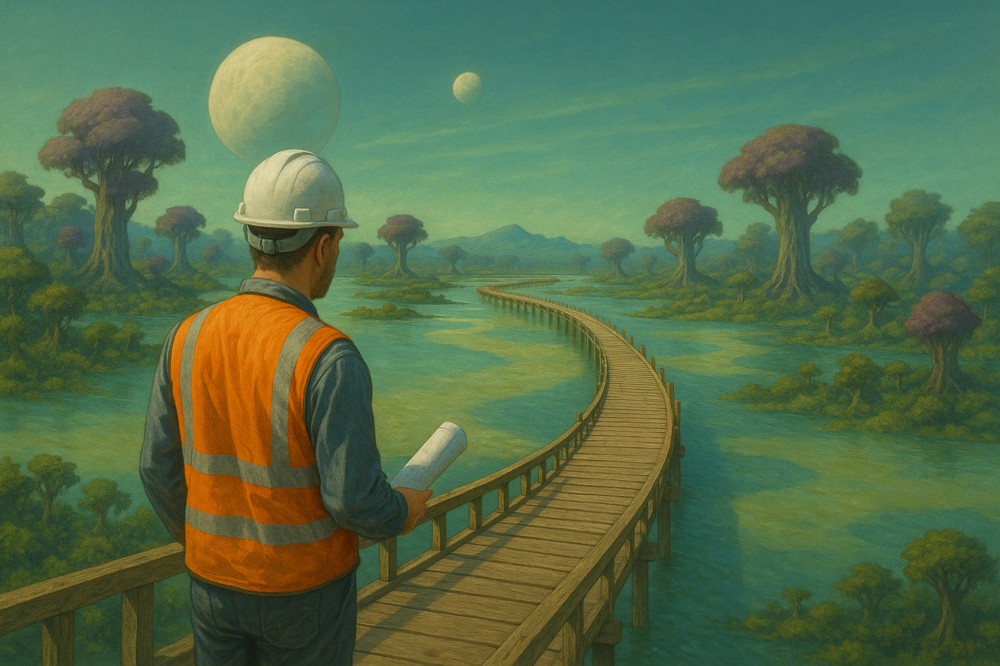

<!DOCTYPE html>
<html>
<head>
  <meta charset="utf-8">
  <title>Become a road engineer!</title>

  <!-- core jsPsych -->
    <script src="https://ajax.googleapis.com/ajax/libs/jquery/1.11.1/jquery.min.js"></script>
    <script src="jspsych-6.3.1/jspsych.js"></script>
    <script src="jspsych-6.3.1/plugins/jspsych-call-function.js"></script>
    <script src="jspsych-6.3.1/plugins/jspsych-external-html.js"></script>
    <script src="jspsych-6.3.1/plugins/jspsych-fullscreen.js"></script>
    <script src="jspsych-6.3.1/plugins/jspsych-html-button-response.js"></script>
    <script src="jspsych-6.3.1/plugins/jspsych-html-keyboard-response.js"></script>
    <script src="jspsych-6.3.1/plugins/jspsych-html-slider-response.js"></script>
    <script src="jspsych-6.3.1/plugins/jspsych-instructions.js"></script>
    <script src="jspsych-6.3.1/plugins/jspsych-image-button-response.js"></script>
    <script src="jspsych-6.3.1/plugins/jspsych-survey-multi-choice.js"></script>
    <script src="jspsych-6.3.1/plugins/jspsych-survey-html-form.js"></script>
    <script src="jspsych-6.3.1/plugins/jspsych-survey-likert.js"></script>
    <script src="jspsych-6.3.1/plugins/jspsych-survey-text.js"></script>
    <script src="jspsych-6.3.1/plugins/jspsych-preload.js"></script>
    <script src="jspsych-6.3.1/plugins/jspsych-external-html.js"></script>
    <script src="stimuli/mazes.js"></script>
    <link href="jspsych-6.3.1/css/jspsych.css" rel="stylesheet" type="text/css"></link>

    <style>
  .jspsych-display-element{
    display:flex;
    flex-direction:column;
    justify-content:center;   /* vertical */
    align-items:center;       /* horizontal */
    min-height:90vh;         /* full viewport */
  }
  /* optional: limit line-width and centre text */
  .jspsych-content{
    max-width:1200px;
    text-align:center;
  }
</style>
    
</head>

<body>
<div id="jspsych-experiment"></div>

<script>
/* ------------ global settings -------------------- */
const ALLOW_WALLS      = true;   // ghost mode through walls
const TRACE_WIDTH_PX   = 6;       // absolute width of the line
const BASE_ALPHA       = 0.25;    // opacity on first traversal
const INC_ALPHA        = 0.20;    // additional opacity each repeat

/* ---------- module‑level pointer to the live state ---------- */
let activeState = null;      // will hold the state object for this trial

/* ------------ helpers ---------------------------- */


/* Save data to CSV */
// Define redirect link for Qualtrics and add Turk variables
var turkInfo = jsPsych.turk.turkInfo();
// Add MTurk info to CSV
jsPsych.data.addProperties({
assignmentID: turkInfo.assignmentId
});
jsPsych.data.addProperties({
mturkID: turkInfo.workerId
});
jsPsych.data.addProperties({
hitID: turkInfo.hitId
});
function saveData(name, data) {
  var xhr = new XMLHttpRequest();
  xhr.open('POST', 'write_data.php'); // 'write_data.php' is the path to the php file described above.
  xhr.setRequestHeader('Content-Type', 'application/json');
  xhr.send(JSON.stringify({
  filename: name,
  filedata: data
  }));
}


// key → delta ---------------------------------------------------------------
const DELTA = { w:[0,-1], a:[-1,0], s:[0,1], d:[1,0] };

// ---- random helpers
function shuffle(a){ for(let i=a.length-1;i>0;i--){ const j=Math.floor(Math.random()*(i+1)); [a[i],a[j]]=[a[j],a[i]]; } return a; }
function sample(a,n){ return shuffle(a.slice()).slice(0,n); }

// ---- split a color pool into disjoint wall/path palettes (even num_colors)
function samplePalettes(pool, num_colors){
  const k = Math.max(1, Math.floor(num_colors/2));      // at least 1 color for wall, 1 color for path
  const picked = sample(pool, 2*k);
  return { wall: picked.slice(0,k), path: picked.slice(k,2*k) };
}

// ---- assign a color to every cell; adjacent same-type cells avoid same color (checks up/left)
// maze: 2D array of '#' or '.', HxW; returns 2D array of hex strings
function assignColors(maze, wallColors, pathColors){
  const H = maze.length, W = maze[0].length;
  const assigned = Array.from({length:H}, ()=>Array(W).fill(null));
  for(let y=0;y<H;y++){
    for(let x=0;x<W;x++){
      const isWall = maze[y][x] === '#';
      const palette = isWall ? wallColors : pathColors;
      const forbidden = new Set();
      // up
      if(y-1>=0 && (maze[y-1][x]==='#')===isWall){
        const c = assigned[y-1][x]; if(c) forbidden.add(c);
      }
      // left
      if(x-1>=0 && (maze[y][x-1]==='#')===isWall){
        const c = assigned[y][x-1]; if(c) forbidden.add(c);
      }
      const choices = palette.filter(c=>!forbidden.has(c));
      assigned[y][x] = (choices.length ? choices : palette)[Math.floor(Math.random()*(choices.length?choices.length:palette.length))];
    }
  }
  return assigned;
}

var num_successful_trials = 0;

// compose an *undirected* edge key  ----------------------------------------
function edgeKey(p1, p2){
  return p1[0]<p2[0] || p1[1]<p2[1] ? `${p1}-${p2}` : `${p2}-${p1}`;
}

/* ------------ drawing ----------------------------------------------------- */
function drawMaze(ctx, cfg) {
  const { maze, tile, colors, assignedColors, pos, facing, start, goal } = cfg;
  ctx.clearRect(0, 0, ctx.canvas.width, ctx.canvas.height);

  // 1) background grid (colored if assignedColors given)
  maze.forEach((row, r) => row.forEach((cell, c) => {
    if (assignedColors) {
      ctx.fillStyle = assignedColors[r][c];
    } else {
      ctx.fillStyle = (cell === '#') ? colors.wall : colors.path;
    }
    ctx.fillRect(c * tile, r * tile, tile, tile);
  }));

  // 1b) start dot & goal star
  if (start && goal) {
    const [sx,sy] = start, [gx,gy] = goal;
    ctx.fillStyle = 'red';
    ctx.beginPath();
    ctx.arc(sx*tile + tile/2, sy*tile + tile/2, tile*0.25, 0, 2*Math.PI);
    ctx.fill();

    ctx.save();
    ctx.translate(gx*tile + tile/2, gy*tile + tile/2);
    ctx.rotate(Math.PI/10);
    ctx.fillStyle = 'red';
    ctx.beginPath();
    for (let i=0;i<5;i++){ ctx.lineTo(0,-tile*0.30); ctx.rotate(Math.PI/5); ctx.lineTo(0,-tile*0.12); ctx.rotate(Math.PI/5); }
    ctx.closePath(); ctx.fill(); ctx.restore();
  }

  // 2) trail (edge-based, trimmed)
  const TRACE_WIDTH_PX = cfg.traceWidthPx ?? 6;
  const BASE_ALPHA = cfg.baseAlpha ?? 0.25, INC_ALPHA = cfg.incAlpha ?? 0.20;
  const edgeCounts = {};
  const trail = cfg.trail || [];
  for(let i=1;i<trail.length;i++){
    const k = edgeKey(trail[i-1], trail[i]);
    edgeCounts[k] = (edgeCounts[k]||0)+1;
  }
  ctx.lineWidth = TRACE_WIDTH_PX;
  ctx.lineCap = 'butt';
  const trim = TRACE_WIDTH_PX/2;

  Object.entries(edgeCounts).forEach(([k,n])=>{
    const [[x1,y1],[x2,y2]] = k.split('-').map(s=>s.split(',').map(Number));
    const cx1=x1*tile+tile/2, cy1=y1*tile+tile/2, cx2=x2*tile+tile/2, cy2=y2*tile+tile/2;
    let sx=cx1, sy=cy1, ex=cx2, ey=cy2;
    if (cx1===cx2){ sy += (cy2>cy1? trim:-trim); ey += (cy2>cy1? -trim: trim); }
    else {          sx += (cx2>cx1? trim:-trim); ex += (cx2>cx1? -trim: trim); }
    ctx.strokeStyle = `rgba(0,0,255,${Math.min(BASE_ALPHA+INC_ALPHA*(n-1),1)})`;
    ctx.beginPath(); ctx.moveTo(sx,sy); ctx.lineTo(ex,ey); ctx.stroke();
  });

  // 3) agent arrow with black contour
  if (pos){
    ctx.save();
    ctx.translate(pos[0]*tile + tile/2, pos[1]*tile + tile/2);
    const rot = {up:0,right:90,down:180,left:270}[facing] * Math.PI/180;
    ctx.rotate(rot);
    ctx.fillStyle = (colors && colors.agent) || '#ff0000';
    ctx.beginPath();
    ctx.moveTo(0,-tile/2.5); ctx.lineTo(tile/3, tile/2.5); ctx.lineTo(-tile/3, tile/2.5);
    ctx.closePath(); ctx.fill();
    ctx.lineWidth = 2; ctx.strokeStyle = 'black'; ctx.stroke();
    ctx.restore();
  }

  // 4) outer black border
  ctx.lineWidth = 2; ctx.strokeStyle = 'black';
  ctx.strokeRect(0.5, 0.5, maze[0].length*tile - 1, maze.length*tile - 1);
}

/* ------------ step utility ----------------------------------------------- */
function step(pos, dir, maze){
  const [dx,dy] = DELTA[dir];
  const [nx,ny] = [pos[0]+dx, pos[1]+dy];

  if (ALLOW_WALLS) return [nx,ny];               // ghost mode

  const cell = maze[ny]?.[nx];
  return (cell !== undefined && cell !== '#')    // any char but '#'
         ? [nx,ny]
         : pos;
}


/* ------------ maze + colours --------------------------------------------- */
function makeMazeTrial({
  mazeArr,
  start      = [1,1],
  goal       = [1,1],
  tile       = 32,
  trialDuration =  60000,  // in ms
  allowWalls = false,
  isColored  = false,
  colorsPool = ['#1b9e77','#d95f02','#7570b3','#e7298a','#66a61e','#e6ab02','#a6761d','#666666',
                '#8dd3c7','#ffffb3','#bebada','#fb8072','#80b1d3','#fdb462','#b3de69','#fccde5'],
  num_colors = 8,
  is_practice_maze = 0,
  original_maze_idx = -1,
  block_idx = -1,
  trial_idx = -1,
} = {}) {

  // closure variables shared by callbacks
  let state = null, keyH = null;
  let wallPalette = ['#000'], pathPalette = ['#fff'];     // defaults
  let assignedColors = null;
  // Countdown
  let countdownId = null;   // handle for clearInterval

  function setupColors(){
    if (!isColored){
      wallPalette = ['#000']; pathPalette = ['#fff'];
      assignedColors = null;
      return;
    }
    const {wall, path} = samplePalettes(colorsPool, num_colors);
    wallPalette = wall; pathPalette = path;
    assignedColors = assignColors(mazeArr, wallPalette, pathPalette);
  }

  const legendHTML = () => {
  const chip = c =>
    `<span style="display:inline-block;width:${tile}px;height:${tile}px;border:1px solid #000;background:${c};margin-right:6px;"></span>`;
  return `
    <div id="legend" style="position:absolute; top:40%;">
      <div style="display:flex; align-items:center; gap:8px; font-family:monospace; margin-bottom:12px;">
        <b>Danger: </b>
        <div style="display:flex; flex-wrap:nowrap; overflow-x:auto;">
          ${wallPalette.map(chip).join('')}
        </div>
      </div>
      <div style="display:flex; align-items:center; gap:8px; font-family:monospace;">
        <b>Safety:</b>
        <div style="display:flex; flex-wrap:nowrap; overflow-x:auto;">
          ${pathPalette.map(chip).join('')}
        </div>
      </div>
    </div>`;
};


  return {
    type: 'html-button-response',
    trial_duration: trialDuration,                               // 1 minute
    stimulus: () => {
        setupColors();  // choose palettes + assign colours for this trial

        const W = mazeArr[0].length * tile;
        const H = mazeArr.length  * tile;

        return `
        <div style="display:flex; justify-content:center;">
            <div id="maze-holder"
                style="position:relative; width:${W}px; height:${H}px;
                        margin-top:12vh;">                   <!-- pushes maze down only -->
            <canvas id="maze" width="${W}" height="${H}" style="display:block;"></canvas>
            
                 <!-- COUNTDOWN -->
                <div id="countdown"
                    style="position:absolute; top:8px; right:-35%;
                            font-family:monospace; font-size:50px; font-weight:bold;">
                  ${Math.ceil(trialDuration/1000)}
                </div>


                ${legendHTML()}   <!-- absolutely positioned; left set in on_load -->
            </div>
            </div>

            <p style="font-family:monospace; text-align:center">
            WASD = move | B = backtrack | R = restart
            </p>`;
        },
    choices: ['Submit'],

    on_load: function () {
      state = {
        pos: [...start],
        facing: 'up',
        trail: [[...start]],
        history: [[...start]],
        keylog: [],
        t0: performance.now(),   // ← trial start timestamp (high-res)
        rtlog: []               // ← RTs (ms) aligned with keylog
      };

      const ctx = document.getElementById('maze').getContext('2d');
      // Place legend a fixed gap to the right of the canvas edge
        const GAP = 24;                                                 // px
        const canvas = document.getElementById('maze');
        const legend = document.getElementById('legend');
        if (legend) legend.style.left = (canvas.width + GAP) + 'px';

      drawMaze(ctx, {
        maze: mazeArr, tile,
        start, goal,
        pos: state.pos, facing: state.facing, trail: state.trail,
        colors: {wall:'#000', path:'#fff', agent:'#ff0000'},
        assignedColors
      });

      keyH = e => {
        const k = e.key.toLowerCase();

          // Log recognized keys (WASD, B, R)
        if ('wasdbr'.includes(k)) {
            const rt = Math.round(performance.now() - state.t0); // ms since trial start
            state.keylog.push(k);
            state.rtlog.push(rt);
        }

        if ('wasd'.includes(k)) {
          const np = (() => {
            const [dx,dy] = DELTA[k];
            const [nx,ny] = [state.pos[0]+dx, state.pos[1]+dy];
            if (allowWalls) return [Math.min(Math.max(0,nx),mazeArr[0].length-1),Math.min(Math.max(0,ny),mazeArr.length-1)]; // per‑maze ghost mode
            const cell = mazeArr[ny]?.[nx];
            return (cell !== undefined && cell !== '#') ? [nx,ny] : state.pos;
          })();
          if (np[0]!==state.pos[0] || np[1]!==state.pos[1]) {
            state.pos = np;
            state.facing = {w:'up',a:'left',s:'down',d:'right'}[k];
            state.history.push([...np]);
            state.trail = [...state.history];
          }
        } else if (k === 'b' && state.history.length > 1) {
          const last = state.history[state.history.length - 1];
          const prev = state.history[state.history.length - 2];
          const dx = prev[0] - last[0], dy = prev[1] - last[1];
          if (dx ===  1) state.facing = 'left';
          else if (dx === -1) state.facing = 'right';
          else if (dy ===  1) state.facing = 'up';
          else                 state.facing = 'down';
          state.history.pop();
          state.pos = [...prev];
          state.trail = [...state.history];
        } else if (k === 'r') {
          state.pos=[...start];
          state.history=[[...start]];
          state.trail=[[...start]];
          state.facing='up';
        }

        drawMaze(ctx, {
          maze: mazeArr, tile,
          start, goal,
          pos: state.pos, facing: state.facing, trail: state.trail,
          colors: {wall:'#000', path:'#fff', agent:'#ff0000'},
          assignedColors
        });
      };

      window.addEventListener('keydown', keyH);


        /* --------- countdown clock ----------------------------------------- */
      const cdEl = document.getElementById('countdown');
      let remaining = Math.ceil(trialDuration / 1000);
      countdownId = setInterval(() => {
        remaining--;
        if (remaining >= 0) cdEl.textContent = remaining;
        if (remaining <= 0) clearInterval(countdownId);
      }, 1000);

    },

    on_finish: function (data) {
      if (countdownId) clearInterval(countdownId);   // stop countdown if user clicked early

      if (keyH) window.removeEventListener('keydown', keyH);

      const clicked_submit = Number(data.response !== null && data.response !== undefined);
      const hitWall = Number(state.trail.some(([x,y]) => mazeArr[y]?.[x] === '#'));
      const reachedGoal = Number(state.trail.some(([x,y]) => x===goal[0] && y===goal[1]));
      const success = reachedGoal * (1-hitWall) * clicked_submit;
      num_successful_trials =  num_successful_trials + (1-is_practice_maze)*success; // Only count test trials for final bonus

      const bonus_trial = success * (max_bonus_per_trial - cost_per_jetty_length_dollars*(state.trail.length-1))
      cumulative_bonus = cumulative_bonus + (1-is_practice_maze)*bonus_trial; // Only count test trials for final bonus
      console.log(bonus_trial);

      data.is_colored   = Number(isColored);
      data.num_colors   = Number(num_colors); // #wall colors + #path colors
      data.wall_colors  = wallPalette;
      data.path_colors  = pathPalette;
      data.colored_grid = assignedColors;          // 2D array of hex codes

      // Maze stimulus
      data.block = block_idx;
      data.trial = trial_idx;
      data.maze_size    = `${mazeArr.length}x${mazeArr[0].length}`;
      data.is_practice_maze = is_practice_maze;
      data.test_maze_orig_idx = original_maze_idx;
      data.maze_grid           =  mazeArr;
      data.start_pos = start;
      data.goal_pos = goal;

      // Response
      data.trajectory   = state.trail;
      data.keylog       = state.keylog;
      data.key_rts = state.rtlog;                          // [12, 380, 742, …]
      data.key_events = state.keylog.map((k,i) => [k, state.rtlog[i]]); // [["w",12],["d",380],…]
      data.ipi = state.rtlog.map((t,i)=> i ? t - state.rtlog[i-1] : t); // [12, 368, 362, …]
      data.trajectory_length = (state.trail.length - 1); // Total length of final submitted trajectory

      // Evaluation
      data.hit_wall     = hitWall;
      data.reached_goal = reachedGoal;
      data.submitted_in_time = clicked_submit;
      data.trial_success = success;
      data.trial_bonus = bonus_trial;
      data.cumulative_bonus = cumulative_bonus;
    }
  };
}

/* --------------------------------------------------  define your mazes  -- */
var PRACTICE_MAZES = PRACTICE_MAZES_raw.map(rows => rows.map(r => r.split('')));   // convert each to 2‑D array
var MAZES = MAZES_raw.map(rows => rows.map(r => r.split('')));   // convert each to 2‑D array
MAZES = MAZES.slice(0,15); // 15 test mazes

var trialDuration = 60000; // ms per trial.
var base_pay_dollars = 3;
var bonus_max_dollars = 3;
var max_bonus_per_trial = Math.round(100*(bonus_max_dollars/(2*MAZES.length)+0.04))/100; // 0.14 or 0.12
var cost_per_jetty_length_dollars = 0.002; // 0.002 0r 0.012
var cumulative_bonus = 0;

/* -------- build timeline: one maze trial per maze ----------------------- */


/* helper: wrap pages once so you don’t repeat the tag manually */
/* -------------------------------------------------------------------------
   RENDER A STATIC EXAMPLE MAZE (no keys, no submit)
   ------------------------------------------------------------------------- */
function buildDemoHTML(mazeArr, wallPalette, pathPalette, tile){
  const W   = mazeArr[0].length * tile;
  const H   = mazeArr.length    * tile;
  const GAP = 24;                        // legend gap to the right of maze

  // colour each square (no-adjacent-same rule)
  const assigned = assignColors(mazeArr, wallPalette, pathPalette);

  const chip = c => `<span style="display:inline-block;width:${tile}px;height:${tile}px;
                                   border:1px solid #000;background:${c};margin-right:6px;"></span>`;

  const html = `
    <div style="display:flex; justify-content:center; position:relative;">
      <div style="position:relative; width:${W}px; height:${H}px;">
        <canvas id="demo-canvas" width="${W}" height="${H}" style="display:block;"></canvas>
        <div style="position:absolute; top:8px; right:8px;
                    font-family:monospace; font-size:22px; font-weight:bold;">60</div>
      </div>

      <div style="margin-left:${GAP}px; font-family:monospace;">
        <div style="display:flex; align-items:center; gap:8px; margin-bottom:12px;">
          <b>Walls:</b><div style="display:flex;">${wallPalette.map(chip).join('')}</div>
        </div>
        <div style="display:flex; align-items:center; gap:8px;">
          <b>Paths:</b><div style="display:flex;">${pathPalette.map(chip).join('')}</div>
        </div>
      </div>
    </div>`;
  return {html, assigned};
}


const DEMO_MAZE      = MAZES[0];
const colorsPool = ['#1b9e77','#d95f02','#7570b3','#e7298a','#66a61e','#e6ab02','#a6761d','#666666',
                '#8dd3c7','#ffffb3','#bebada','#fb8072','#80b1d3','#fdb462','#b3de69','#fccde5'];
const PALETTES   = samplePalettes(colorsPool, 8);   // reuse your pool
const {html: DEMO_HTML, assigned: DEMO_COLOURS} =
      buildDemoHTML(DEMO_MAZE, PALETTES.wall, PALETTES.path, 28);

const start_with_8colors = getRandomInt(0,1);
var intro_Maze_images = [["img/practice_maze_0_0.png", "img/practice_maze_0_1.png"], ["img/practice_maze_0_0_rim.png", "img/practice_maze_0_1_rim.png"]];
intro_Maze_images = [[intro_Maze_images[0][start_with_8colors], intro_Maze_images[0][1-start_with_8colors]], [intro_Maze_images[1][start_with_8colors], intro_Maze_images[1][1-start_with_8colors]]];

var num_color_blocks = [2,8]; // Either 2 colors or 8 colors maze.
var demo_mazes_byblock_raw = [PRACTICE_MAZES.slice(0,3), PRACTICE_MAZES.slice(3,6)]; // First three demo mazes are for the B-W block; the latter three are for the colored block
num_color_blocks = [num_color_blocks[start_with_8colors], num_color_blocks[1-start_with_8colors]]
var demo_mazes_byblock = [jsPsych.randomization.shuffle(demo_mazes_byblock_raw[start_with_8colors]), jsPsych.randomization.shuffle(demo_mazes_byblock_raw[1-start_with_8colors])]; // Sequence of practice trials
// var demo_mazes_byblock = [demo_mazes_byblock_raw[start_with_8colors], demo_mazes_byblock_raw[1-start_with_8colors]]; // Sequence of practice trials
// console.log(demo_mazes_byblock)

const introPages = [
   `<p style='font-size: 30px'> Become a road engineer! </p>
    <p> Imagine you are a road engineer, paving a jetty over swamps on an alien planet.
    <br> Later on, expedition teams will use your jetty, so it better not collapse!</p>`
    +'</img>',

    `<p>The safety of the jetty depends on which <b>soil types</b> it is built over.<br>
        Soils with certain colors are <b>safe</b>---they are hard enough to support the jetty.<br>
        Soils with other colors are <b>dangerous</b>---if the jetty passes through them, it will collapse under weight.</p>
        Upon inspecting the soil colors in the swamp, you must <b>come up with a safe route for the jetty, from the starting point to the end point</b>.</p>`,

    `<p> The whole game consists of <b>two blocks</b>. <br>
        In each block, you will visit <b>${MAZES.length} swamps</b> sequentially, paving one jetty route in each.</p>
    <p> Here is an example swamp below. it consists of many squares, each square populated by one soil color.<br>
        The starting point and the end point of your jetty are marked with a <b style="color:red">red dot</b> and a <b style="color:red">red star</b> respectively.</p>
    <p>Beware: each swamp is characterized by a <b>different set</b> of <b>safe/dangerous soil colors</b>!<br>
    The safe and dangerous soil colors for the current swamp will be displayed as a <b>legend</b> to its right.<br>
     </img></p>`,

    `<p>Below is another example swamp, with another set of soil colors.<br>
        Your goal remains the same: pave a jetty from the red dot to the red star, without passing through any dangerous soil squares.<br>
    </img></p>`,

    `<p>For each swamp, you will submit your jetty route through a series of <b>keyboard presses</b>.</p>
    <p>You will always begin at the <b style="color:red">red dot</b>, playing as a <b style="color:red">red arrow head</b>.<br>
    Move yourself around by pressing <b>WASD</b> keys. You will leave a <b style="color:#C2C2F2">trail</b> behind, which indicates your jetty route. <br>
    Once you feel ready, click the <b>"Submit"</b> button below the swamp to submit your route.</p>
    <p>If you feel that you have made a mistake, press the <b>B</b> key to backtrack to your previous step.<br>
    You can also clear your trail and restart from the red dot by pressing the <b>R</b> key. </p>
    <p></img></p>`,
    
   ` <p> Now, let\'s move onto payment! </p>
    <p>For each swamp, your <b style="color:green">\$bonus\$</b> depends on the length of the jetty route submitted (how many squares it passes through).<br>
        Because jetty material is costly, <b style="color:green">the shorter the jetty, the greater your bonus is.</b><br>
        Specifically, your <b style="color:green">Bonus = \$${max_bonus_per_trial} – (\$${cost_per_jetty_length_dollars} × the submitted jetty's length)</b>, bounded below by $0.<br>
        This allows your jetty to be ${max_bonus_per_trial / cost_per_jetty_length_dollars} squares long, which is much more than enough!</p>
    <p>However, several <b>failures</b> would lower your bonus to <b>\$0</b>, no matter how short the jetty is: <br>
        If <b style="color:red">the jetty does not arrive at the red star</b>, you will earn <b style="color:red">\$0</b> for that swamp.<br>
        If <b style="color:red">the jetty passes through ANY square covered by dangerous soil</b>, you will also earn <b style="color:red">\$0</b> for that swamp.<br>
        <i>(Note that you can use WASD to draw trails through dangerous soil squares---there won\'t be any warnings)</i></p>
    <p>For each swamp, you have <b>${Math.ceil(trialDuration/1000)} seconds</b> to submit your jetty route.<br>
        A countdown will be available above the legend, displaying the time remaining. <br>
        If you <b style="color:red">fail to submit in time</b>, you also earn <b style="color:red">\$0</b>  for that swamp.</p>
        <p>There is no feedback for each swamp---upon submission, you are automatically redirected to the next swamp.</p>`,
    
    `<p> A final reminder: you can actually pave your jetty <b>around</b> swamps, without cutting through them!</p>
    <p>Specifically, there are always <b>two rim paths</b> around each swamp's outskirts, which connect the red dot to the red star.
        <br>These rim paths <b>usually</b> consist of safe soil colors, such that jetties can pass through them.</p>
    <p>However, going around the swamp incurs longer lengths (half the swamp\'s perimeter).<br> Hence, this strategy may cap your potential bonus more than cutting through the swamp. 
        <br>You can decide whether examining/using rim paths is worthwhile for each swamp.<br>
    </img> </img></p>`,

    `<p> If you understand the rules, please click 'Next' to go to the <b>comprehension check</b>. 
    <br>Otherwise, click 'Previous' to view the instructions again. </p>
    <p>If you don't get the comprehension questions correct, you won't be able to move on. </p>`

]//.map(p => `<div class="center-page">${p}</div>`);   // ← add wrapper

var instructions = {
  type: 'instructions',
  pages: introPages,
  show_clickable_nav: true,
  allow_backward: true,
  show_page_number: true,
//  on_load: function(){
//     /* run one frame later so the <canvas> is actually in the DOM */
//     requestAnimationFrame(() => {
//       const canvas = document.getElementById('demo-canvas');
//       if (!canvas) return;                        // not on the demo page
//       if (canvas.dataset.drawn) return;           // already drawn once

//       const ctx = canvas.getContext('2d');
//       drawMaze(ctx, {
//         maze:  DEMO_MAZE,
//         tile:  28,
//         start: [Math.floor(DEMO_MAZE[0].length/2), 1],
//         goal:  [Math.floor(DEMO_MAZE[0].length/2), DEMO_MAZE.length-2],
//         pos: null, facing: 'up', trail: [],
//         colors:{wall:'#000', path:'#fff', agent:'#ff0000'},
//         assignedColors: DEMO_COLOURS
//       });
//       canvas.dataset.drawn = true;                // flag so we don’t redraw
//     });
//   }
    
};

   var gap = {
        type: 'html-keyboard-response',
        stimulus: " ",
        choices: [],
        trial_duration: 1000
    };

    var failed_comprehension_questions = true;
    let comprehension_questions = {
        type: 'survey-multi-choice',
        preamble: `Comprehension questions:`,
        questions: [
            {
                prompt: '<b> 1. What is the goal of the game? </b>',
                options: ['To predict which soil colors exist in which swamps.',
                          'To pave a jetty through each swamp, from a starting point to an end point.',
                          'To randomly press keyboard keys until the time limit.'], 
                required: true
            },
            {
                prompt: '<b> 2. What are the colored squares in each swamp? </b>',
                options: ['The colors are useless for the task.',
                          'The colors indicate how close the square is to the end point.',
                          'The color indicates whether it is safe/dangerous for the jetty to pass through the square.'], 
                required: true
            },
            {
                prompt: '<b> 3. What happens if your submitted jetty passes through a dangerous-colored square? </b>',
                options: ['You\'ll receive $0 for that swamp and move on.',
                          'You\'ll be asked to submit another jetty route for the same swamp, until success.',
                          'No squares are dangerous, so the question\'s premise does not hold.'], 
                required: true
            },
            {
                prompt: '<b> 4. What determines your bonus? </b>',
                options: ['How fast I submit the jetty route.',
                          'The length of the jetty route; it cannot pass through dangerous squares, or fail to lead to the red star.',
                          'How consistent my jetty routes are across swamps.'], 
                required: true
            }
        ],
        on_finish: function(data) {
            var responses = data.response
            if (responses.Q0.includes('pave') == true && responses.Q1.includes('safe') == true && responses.Q2.includes('move on') == true && responses.Q3.includes('length') == true) {
                failed_comprehension_questions = false
            }
        }
    };

    var fail_page = {
          type: 'html-button-response',
          stimulus: "<p> Oops! You did not pass the comprehension check. </p>",
          choices: ['<p style="font-size: 20px"><b> View instructions again </b></p>']
    };

    var fail = {
        timeline: [fail_page],
        conditional_function: function() {
            return failed_comprehension_questions
        }
    };


    // Use this code to include comprehension questions
    var inst_comprehension = {
        timeline: [instructions, gap, comprehension_questions, fail],
        loop_function: function(){
            return failed_comprehension_questions
        }
    };
    var instructions2 = {
        type: "instructions",
        pages: [
        `<p>Congratulations on passing the comprehension check! You are about to start the game!</p>
        <p><b>Gentle Reminders:</b></p>
        <p>Please make sure to follow the instructions on the screen carefully.</p>
        <p>In order for your data to be saved successfully, you need to complete the full game, <br>advancing to the completion code screen at the end of the game.</p>`,
        `<p>The game will take about 20 minutes to complete.</p>
        <p>You will earn a guaranteed $`+base_pay_dollars.toFixed(2)+` for completing the game and a potential bonus payment up to $`+bonus_max_dollars.toFixed(2)+`. </p>
        <p>We thank you for taking the time to complete this task to the best of your ability.</p>
        <p><b>Please proceed when you are ready to begin the game.</b></p>`
        ],
        show_clickable_nav: true
    };


/* ------------ run --------------------------------------------------------- */
var timeline = [];

function check_consent(elem) {
    if (document.getElementById('consent_checkbox').checked) { return true; }
    else {
        alert("If you wish to participate, you must check the box.");
        return false;
    }
    return false;
};
var consent = {
    type: "external-html",
    url: 'consent.html',
    cont_btn: 'start',
    force_refresh: true,
    check_fn: check_consent
}
var full_screen = {
    type: "fullscreen",
    fullscreen_mode: true,
    message: `<p>To avoid distration, this game must be completed in <b>full screen</b> mode by clicking the button below.</p>
                <p>Please <b>do not exit full-screen mode until the end</b> of the game.</p><br>`,
    button_label: "Enter full screen"
}
var objects_img = ["img/jetty.png","img/controls.png"].concat(...intro_Maze_images);
var preload = {
    type: "preload",
    images: objects_img
};


function block_trials(demo_mazes_byblock, MAZES, block_idx, num_color_blocks, intro_Maze_images){
    var congrats = '';
    var MAZES_shuffled_idx = jsPsych.randomization.shuffle([...Array(MAZES.length).keys()]) // Indices in which the mazes are shown
    var block_timeline = []
    if(block_idx>0){
        congrats = `<p>Congratulations on completing the previous block!</p>`
    }

    var instructions_block = {
    type: "instructions",
    pages: [ congrats +
    `<p>You will now move onto <b>Block ${block_idx+1}</b>.</p>
    <p>Each swamp consists of <b>${Math.ceil(num_color_blocks[block_idx]/2)} safe and dangerous soil color(s) each</b>, like the example below.<br>
    As usual, you can pave the jetty around the rim paths.<br>
    </img></p>

    <p>You will first complete ${demo_mazes_byblock[block_idx].length} practice swamps, before being <b>tested in another ${MAZES.length} swamps.</b><br>
        Use the practice swamps as an opportunity to test and finalize your strategy.</p>
    <b>Please proceed when you are ready to begin the block.</b></p>`
    ],
    show_clickable_nav: true
    };
    
    var instructions_block2 = {
    type: "instructions",
    pages: [
    `<p> You have completed the practice swamps.</p>
    <p>You will now be tested in another <b>${MAZES.length} swamps.</b><br>
        Your jetty routes in these swamps will determine your bonus.</p>
    <b>Please proceed when you are ready.</b></p>`
    ],
    show_clickable_nav: true
    };

    block_timeline.push(instructions_block)

    // Feedback after each trial
    var intertrial_page = {
        type: 'html-keyboard-response',
        stimulus: function(){
            const prev = jsPsych.data.get().last(1).values()[0];   // previous trial data
            // Fallback: if ended_by is missing, infer from response presence
            const submitted_in_time = prev?.submitted_in_time ??
                            ((prev?.response === null || prev?.response === undefined) ? 0 : 1);

            const msg = (submitted_in_time == 1)
            ? `<p>You have submitted your jetty route.</p>`
            : `<p>You did not submit your jetty route in time. Be faster next time!</p>`;

            return `${msg}
                    <p>Please press <b>Enter</b> to proceed to the next swamp.</p>`;
        },
        choices: ['enter']   // use lower-case key name to avoid key-mapping issues
    };

    // Practice trials 
    for (let t=0; t<demo_mazes_byblock[0].length; t++){
        m = demo_mazes_byblock[0][t];
        block_timeline.push(
            makeMazeTrial({
        mazeArr: m,
        start:   [Math.floor(m[0].length/2), 1], // starting point
        goal:    [Math.floor(m[0].length/2), m.length-2],   // example: bottom‑right corner
        tile:  28,
        trialDuration: trialDuration,  // in ms
        allowWalls: true,
        isColored:  1,   // example: color every other maze
        num_colors: num_color_blocks[block_idx],               // num_color_blocks[0]
        is_practice_maze: 1,
        block_idx: block_idx,
        trial_idx: t,
        // colorsPool: [...your hex list...]   // optional custom pool
    }));
        block_timeline.push(intertrial_page);
    }
    block_timeline.push(instructions_block2)

    // Test trials 
    for (let t=0; t<MAZES.length; t++){
        m = MAZES[MAZES_shuffled_idx[t]];
        block_timeline.push(
            makeMazeTrial({
        mazeArr: m,
        start:   [Math.floor(m[0].length/2), 1], // starting point
        goal:    [Math.floor(m[0].length/2), m.length-2],   // example: bottom‑right corner
        tile:  28,
        trialDuration: trialDuration,  // in ms
        allowWalls: true,
        isColored:  1,   // example: color every other maze
        num_colors: num_color_blocks[block_idx],               // num_color_blocks[0]
        is_practice_maze: 0,
        original_maze_idx: MAZES_shuffled_idx[t],
        block_idx: block_idx,
        trial_idx: t,
        // colorsPool: [...your hex list...]   // optional custom pool
    }));
        block_timeline.push(intertrial_page);
    }

    return block_timeline
}

function end_experiment(){

var demographics = {
  type: 'survey-html-form',
  preamble:
    '<p><b>Congratulations for completing all questions!</b></p>' +
    '<p>We need some more information from you. This will not be associated with your MTurk profile, nor will it impact you in any way.</p>',
  html: `
    <!-- form-local styles so we don't affect other trials -->
    <style>
      .demog-form { max-width: 840px; margin: 0 auto; text-align: left; }
      .demog-form .q { margin: 14px 0; }
      .demog-form fieldset { border: 0 !important; padding: 0; margin: 14px 0; }
      .demog-form legend   { padding: 0; margin: 0 0 6px 0; }
      .demog-form .q-title { font-weight: bold; display: inline-flex; align-items: baseline; }
      .demog-form .q-num { display: inline-block; width: 3ch; text-align: right; margin-right: .5ch; }
      .demog-form .radio-row { display: flex; flex-wrap: wrap; gap: 10px 14px; margin-top: 4px; }
      .demog-form .radio-row label { display: inline-flex; align-items: center; gap: 6px; }
      .demog-form input[type="number"] { width: 5em; }
      .demog-form textarea { width: 100%; }
      /* NEW: indent controls to start *after* the 3ch number + spacing */
      .demog-form .indent { margin-left: calc(3ch + .5ch); }
    </style>

    <div class="demog-form">

      <!-- 1) Gender (radio, indented) -->
      <fieldset class="q">
        <legend class="q-title"><span class="q-num">1)</span> Gender</legend>
        <div class="radio-row indent">
          <label><input type="radio" name="gender" value="Female" required> Female</label>
          <label><input type="radio" name="gender" value="Male" required> Male</label>
          <label><input type="radio" name="gender" value="Non-binary" required> Non-binary</label>
          <label><input type="radio" name="gender" value="Other" required> Other</label>
        </div>
      </fieldset>

      <!-- 2) Age (number input, indented) -->
      <div class="q">
        <label class="q-title" for="age"><span class="q-num">2)</span> Age</label><br>
        <div class="indent">
          <input type="number" name="age" id="age" min="18" max="120" step="1" required>
        </div>
      </div>

      <!-- 3) Color blindness (radio, indented) -->
      <fieldset class="q">
        <legend class="q-title">
          <span class="q-num">3)</span> Have you ever been diagnosed with color-blindness or color vision deficiency (CVD)?
        </legend>
        <div class="radio-row indent">
          <label><input type="radio" name="color_blindness" value="Yes" required> Yes</label>
          <label><input type="radio" name="color_blindness" value="No" required> No</label>
        </div>
      </fieldset>

      <!-- 4) Summary -->
      <div class="q">
        <label class="q-title" for="summary">
          <span class="q-num">4)</span> Please summarize the task you just completed in 1–2 sentences, so that we know you have been paying attention!
        </label><br>
        <textarea name="summary" id="summary" rows="3" required></textarea>
      </div>

      <!-- 5) Optional comments -->
      <div class="q">
        <label class="q-title" for="comment">
          <span class="q-num">5)</span> Optional: We’re always trying to improve. Please let us know if you have any comments.
        </label><br>
        <textarea name="comment" id="comment" rows="3"></textarea>
      </div>

    </div>
  `,
  button_label: 'Continue',
  on_finish: function (data) {
    let resp = data.response;
    if (!resp && typeof data.responses === 'string') {
      try { resp = JSON.parse(data.responses); } catch(e) { resp = {}; }
    }
    data.gender           = resp?.gender ?? '';
    data.age              = resp?.age !== undefined && resp.age !== '' ? Number(resp.age) : null;
    data.color_blindness  = resp?.color_blindness ?? '';
    data.summary          = resp?.summary ?? '';
    data.comment          = resp?.comment ?? '';
    data.response         = resp;

    const interaction = jsPsych.data.getInteractionData();
    data.screen = interaction.json();
  }
};


        // save data
    function saveData(name, data) {
    	var xhr = new XMLHttpRequest();
          xhr.open('POST', 'write_data.php');
          xhr.setRequestHeader('Content-Type', 'application/json');
          xhr.send(JSON.stringify({filename: name, filedata: data}));    
    } 

    let save_data = {
        type: "call-function",
        func: function(){ 
            jsPsych.data.addDataToLastTrial({num_successful_trials:num_successful_trials, cumulative_bonus: cumulative_bonus});
            //jsPsych.data.get().localSave('csv', 'maze_data.csv');
            saveData(turkInfo.workerId, jsPsych.data.get().csv());
        }
    }


    
    var completion = {
    type: 'html-keyboard-response',
    stimulus: () => `
        <div class="intro-slides">                         <!-- NEW -->
        <p><b>Thank you for participating in our study!</b></p>
        <p>
            You have successfully navigated <b>${num_successful_trials}</b> maze(s).<br>
            Your total bonus is <b style="color:green">\$${Math.round(100*cumulative_bonus)/100}</b>.<br>
            We will send your bonus soon after we process the data.
        </p>
        <p>
            Your completion code is
            <b style="color:red">wHISaZgqqj9x</b>.<br>
            Please copy it before you exit this page.
        </p>
        </div>`,
    choices: [],
    };

    return [demographics, save_data, completion]

}

// Full timeline creation
timeline.push(consent);
timeline.push(preload);
timeline.push(full_screen);
//timeline.push(instructions);
timeline.push(inst_comprehension);
timeline.push(instructions2, gap);
timeline.push(...block_trials(demo_mazes_byblock, MAZES, 0, num_color_blocks, intro_Maze_images));
timeline.push(...block_trials(demo_mazes_byblock, MAZES, 1, num_color_blocks, intro_Maze_images));
timeline.push(...end_experiment());

jsPsych.init({
  timeline: timeline,
  display_element:'jspsych-experiment',
  on_finish:()=>jsPsych.data.displayData()
});
</script>


</body>
</html>
